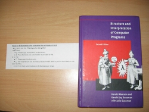

A lot of people were impressed by my finishing the read-through of SICP, completing the vast majority of the exercises. I received a lot of warm comments on my conclusion post - in the blog, on email, and on the Reddit link that immediately took place #1 in the Programming section and held it for a day.
The most interesting feedback was, however, from Geoffrey S. Knauth. He's acquainted with the book authors, and when he told them about my project, they agreed to sign a book for me, which Geoffrey then shipped to Israel on his own expense.
Here's the book and a slip of paper displaying the complex logistics behind this shipment:
And this is the opening page, with the authors' signatures:
I'm really happy about this, and want to thank Geoffrey again for his initiative.